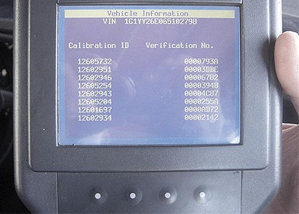
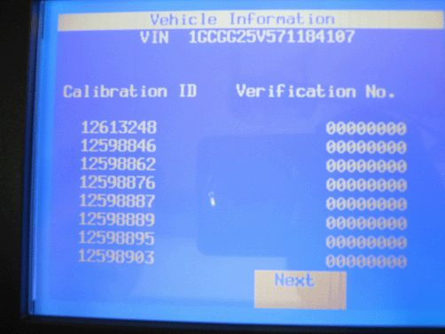
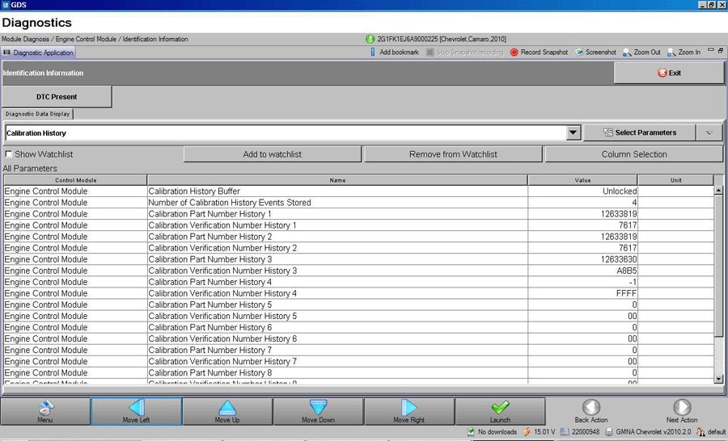
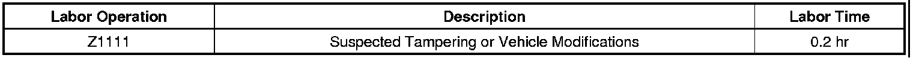

Engine/Transmission - Aftermarket Calibrations
INFORMATIONBulletin No.: 09-06-04-026B
Date: April 07, 2010
Subject: Identifying Non-GM (Aftermarket) Engine and Transmission Calibrations for V8 Gas Engines Using Tech 2(R) or Global Diagnostic System (GDS)
Models:
2006-2010 GM Passenger Cars and Light Duty Trucks (Excluding Saab 9-7X)
2006-2009 HUMMER H2
2006-2010 HUMMER H3
Equipped with V8 Gas Powered Engines Only
Attention:
This bulletin applies to V8 gas powered engines ONLY. For Duramax(TM) diesel powered engines, refer to Corporate Bulletin Number 08-06-04-006G.
Supercede:
This bulletin is being revised to add the 2010 model year and information about retrieving calibrations on a Global A vehicle. Please discard Corporate Bulletin Number 09-06-04-026A (Section 06 - Engine/Propulsion System).
General Motors is identifying an increasing number of engine, transmission and catalytic converter part failures that are the result of non-GM (aftermarket) engine and transmission control calibrations being used.
When alteration to the GM-released engine or transmission control calibrations occurs, it subjects powertrain and driveline components (engine, transmission, transfer case, driveshaft and rear axle) to stresses that were not tested by General Motors. It is because of these unknown stresses, and the potential to alter reliability, durability and emissions performance, that GM has adopted a policy that prevents any UNAUTHORIZED dealer warranty claim submissions to any remaining warranty coverage, to the powertrain and driveline components whenever the presence of a non-GM (aftermarket) calibration is confirmed - even if the non-GM control module calibration is subsequently removed.
Warranty coverage is based on the equipment and calibrations that were released on the vehicle at time of sale, or subsequently updated by GM. That's because GM testing and validation matches the calibration to a host of criteria that is essential to assure reliability, durability and emissions performance over the life of the warranty coverage and beyond. Stresses resulting from calibrations different from those tested and released by GM can damage or weaken components, leading to poor performance and or shortened life.
Additionally, non-GM (aftermarket) issued engine control modifications often do not meet the same emissions performance standards as GM issued calibrations. Depending on state statutes, individuals who install engine control module calibrations that put the vehicle outside the parameters of emissions certification standards may be subject to fines and/or penalties.
This bulletin outlines a procedure to identify the presence of non-GM (aftermarket) calibrations. GM recommends performing this check whenever a hard part failure is seen on internal engine or transmission components, or before an engine assembly or transmission assembly is being replaced under warranty. It is also recommended that the engine calibration verification procedure be performed whenever diagnostics indicate that catalytic converter replacement is indicated.
The PQC has a process to confirm the ECM/PCM calibration is GM issued. The PQC will require a picture of the engine calibration verification screen, as outlined in this bulletin, before authorizing any V8 gas powered engine replacement.
If a non-GM calibration is found and verification has taken place through GM, the remaining powertrain and driveline warranty will be blocked and notated in GMVIS and the dealership will be notified. This block prevents any UNAUTHORIZED warranty claim submission.
1. Connect the Tech 2(R) to the vehicle.
2. Go to: Diagnostics and build the vehicle.
3. Select: Powertrain.
4. Select: Engine.
5. *Select: Engine Control Module or PCM.
6. *Select: Module ID Information or I/M Information System if the Module ID Information selection is not available.
7. *If "I/M information System" was selected, it may be necessary to select "Vehicle Information" in order to display the calibration information.
• If the CVN information is displayed as "N/A", it will be necessary to contact the TCSC to obtain the CVN information.

8. Take a CLEAR digital picture of the Tech 2(R) Vehicle Information screen showing the engine Calibration IDs and Verification Numbers as shown above. Retain the printout information and the Tech 2(R) screen photograph with the repair order.
9. E-mail a copy of the picture to tacsnapshot@gm.com. In the subject line of the e-mail include the phrase "V8 Cal" as well as the complete VIN and Dealer BAC. In the body of the e-mail, include the VIN, mileage, R.O. number and BAC. Include a brief description of the customer concern and cause of the concern.
Note
The dealer will receive an e-mail reply after the calibrations have been validated. The e-mail reply will advise the dealer if the calibrations are OEM.
10. Allow two hours for the PQC to verify the calibrations and set up the case details.
• If the PQC determines that the calibrations ARE aftermarket calibrations, DO NOT contact GM Technical Assistance to discuss warranty concerns on the aftermarket calibrations. ALL questions and concerns about warranty should be directed to the dealers Fixed Operations Manager (FOM), (Warranty Manager (WM) in Canada).
11. You may call the PQC two hours after submitting the e-mail for authorization to replace the assembly. This will provide them time to receive, review and set up a case on the request. Please be prepared to provide all the usual documentation that is normally required when requesting an assembly authorization from the PQC.
Tech 2(R) Displaying All Zeroes for the Verification Numbers on the Calibration ID and Verification Number Screen

If the Tech 2(R) that you are using displays all zeroes for the Verification Numbers as shown, then perform the following steps:
1. Update the Tech 2(R) with the latest software from TIS2WEB.
2. Turn OFF the ignition for 90 seconds.
3. Connect the Tech 2(R) to the vehicle.
4. Turn ON the ignition, and build the vehicle. Observe the Tech 2(R) Calibration ID and Verification Number screen for proper operation.
• If the Tech 2(R) screen still does not display properly, then turn OFF the ignition for 90 seconds again. Turn ON the ignition and observe the same screen for proper operation.
Retrieving Calibrations From a Global A Vehicle
This information applies to the 2010 Camaro and is typical of the procedure that will be used on Global A vehicles.
1. Turn OFF the ignition.
2. Connect the MDI to the Data Link Connector (DLC) of the vehicle.
Note
Use the USB port to make the following MDI connection:
3. Connect the MDI to a PC or laptop that has been downloaded with the GDS application from TIS2WEB.
Note
At least one Diagnostic Package must be installed on the PC to perform diagnostics.
If GDS was just installed, select: Add New Diagnostic Package and then select: a Diagnostic Package to download.
4. Click: On the GDS icon on the PC.
5. The Login Page will appear.
6. Select: A User.
7. The ID Screen will appear.
8. Select: The serial number of the MDI being used.
9. Select: Connect.
10. Verify that the system status is ready by observing for a flashing PC light icon on the MDI.
11. Select: Make, Model and Model Year, in order to build the vehicle.
12. Click: Upload VIN, to allow the VIN to be reported to the PC.
13. At: The Verification step, turn ON the ignition, with the engine OFF.
14. Select: Next Action.
15. The Home Page will appear.
16. Select: Next.
17. The Diagnostic Screen will appear.
Note
Due to vehicle build, software and RPO variations, GDS may ask for additional information in Step 18.
18. Select: Engine ID, if prompted.
19. Select: Module Diagnostics.
20. Select: ECM.
21. Select: ID Information.
22. The Diagnostics page will appear.
Typical View of GDS Calibration History Screen

Note
GDS is capable of displaying up to 10 Calibration History events.
23. Select: Calibration History from the drop down menu in order to display the following items on the screen:
- Calibration History Buffer
- Number of Calibration History Events Stored
- Calibration Part Number History
- Calibration Verification Number History
24. Select: Screenshot.
25. Name and save the file in an appropriate folder.
26. Select : Print, and retain a copy of the screenshot with the repair order.
27. E-mail a copy of the screenshot to tacsnapshot@gm.com. In the subject line of the e-mail include the phrase "V8 Cal" as well as the complete VIN and Dealer BAC. In the body of the e-mail, include the VIN, mileage, R.O. number and BAC. Include a brief description of the customer concern and cause of the concern.
Note
The dealer will receive an e-mail reply after the calibrations have been validated. The e-mail reply will advise the dealer if the calibrations are OEM.
28. Allow two hours for the PQC to verify the calibrations and set up the case details.
• If the PQC determines that the calibrations ARE aftermarket calibrations, DO NOT contact GM Technical Assistance to discuss warranty concerns on the aftermarket calibrations. ALL questions and concerns about warranty should be directed to the dealers Fixed Operations Manager (FOM), (Warranty Manager (WM) in Canada).
29. You may call the PQC two hours after submitting the e-mail for authorization to replace the assembly. This will provide them time to receive, review and set up a case on the request. Please be prepared to provide all the usual documentation that is normally required when requesting an assembly authorization from the PQC.
Warranty Information
- The Dealership Service Management must be involved in any situation that would justify the use of labor operation Z1111.
- Notify the Fixed Operations Manager (FOM) (Warranty Manager (WM) in Canada) of the situation.
- All claims will have to be routed to the FOM (WM in Canada) for approval.
- Please refer to Corporate Bulletin Number 09-00-89-016, Labor Operation Z1111 - Suspected Tampering or Vehicle Modifications for important information.

For vehicles repaired under warranty, use the table above.

Disclaimer